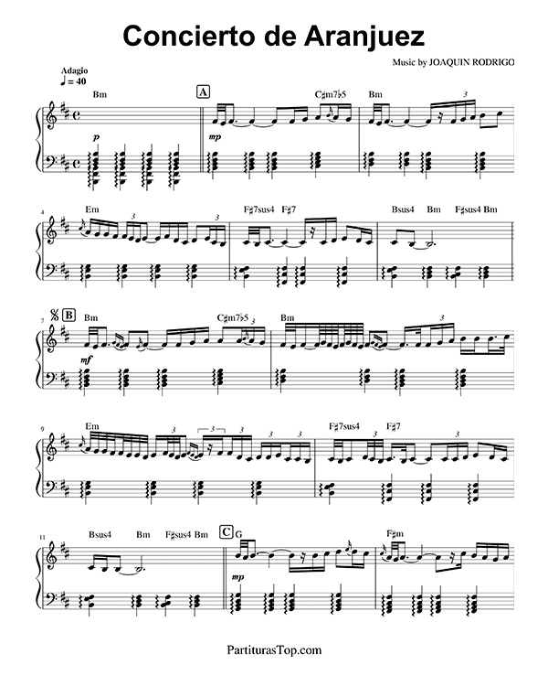

El segundo movimiento, Adagio, es quizás el más famoso del concierto y una de las piezas más emotivas de la música clásica. Comienza con un suave acompañamiento de la orquesta, creando una atmósfera de introspección y melancolía. La guitarra, en un papel solista, presenta una melodía profunda y conmovedora que evoca la belleza y la tristeza de la vida. Este movimiento está inspirado por la tradición de la música flamenca, pero con un enfoque más lírico y contemplativo. Su emotividad ha resonado en numerosas culturas, convirtiéndose en un himno de amor y nostalgia que trasciende el tiempo.
